Two-part FEA study. Part 1 solves an 8-DOF planar truss via LU decomposition in MATLAB and verifies against LINK180 and BEAM188 elements in ANSYS. Part 2 analyses a Belleville spring washer analytically and across 2D axisymmetric and 3D solid FEA models, with large deflection enabled throughout.
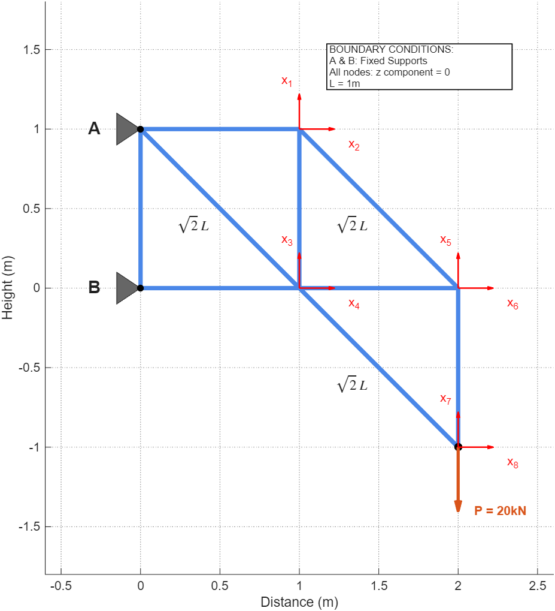
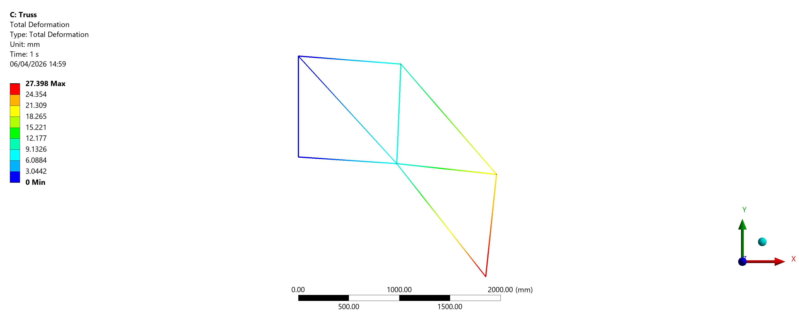
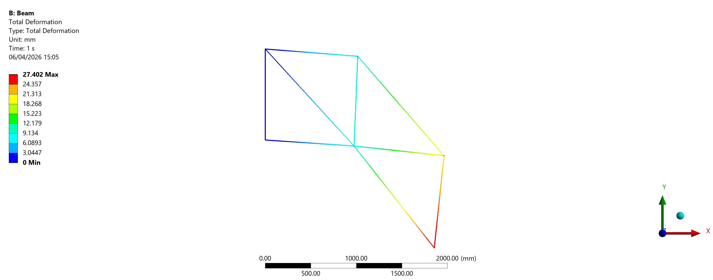
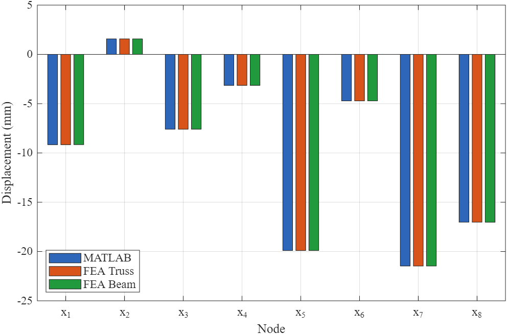
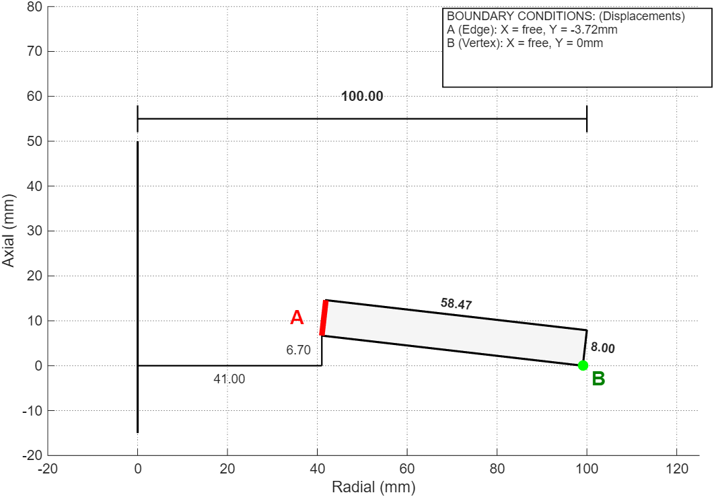
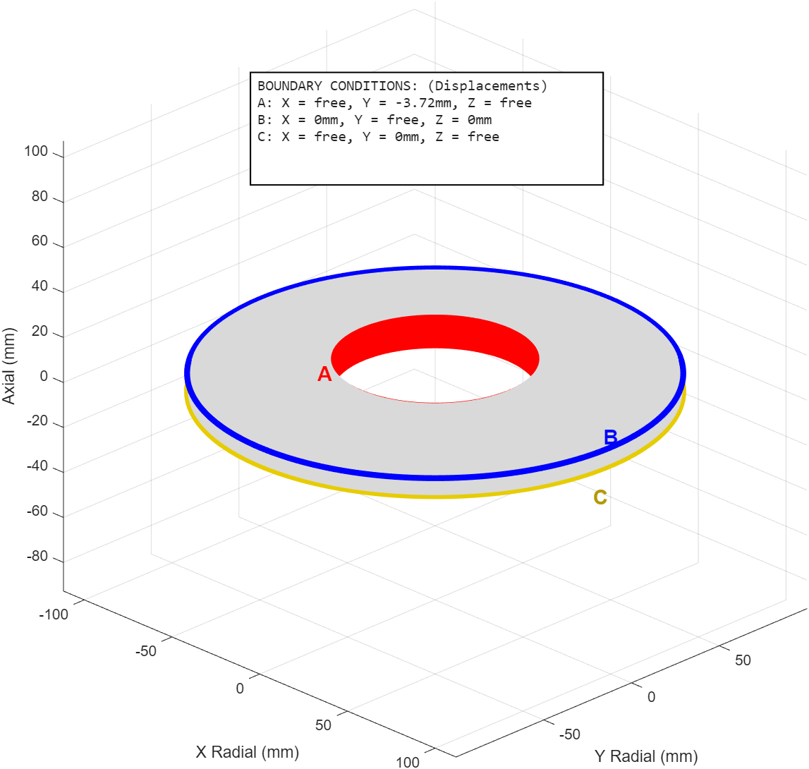
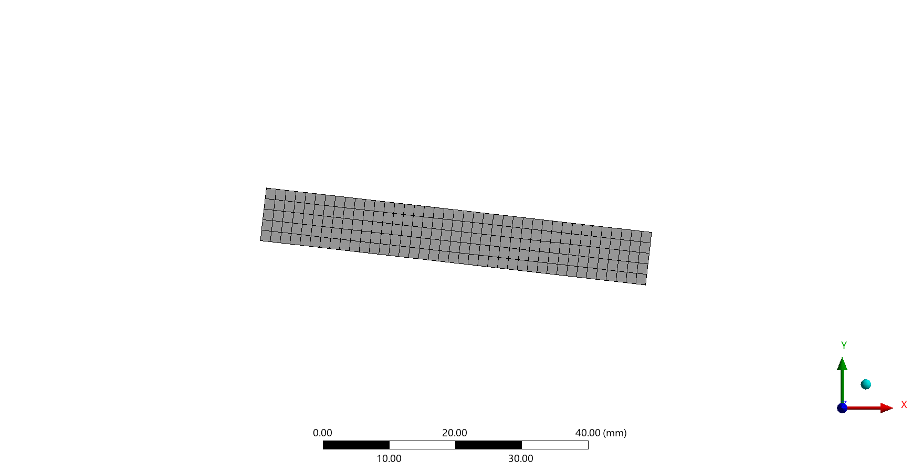
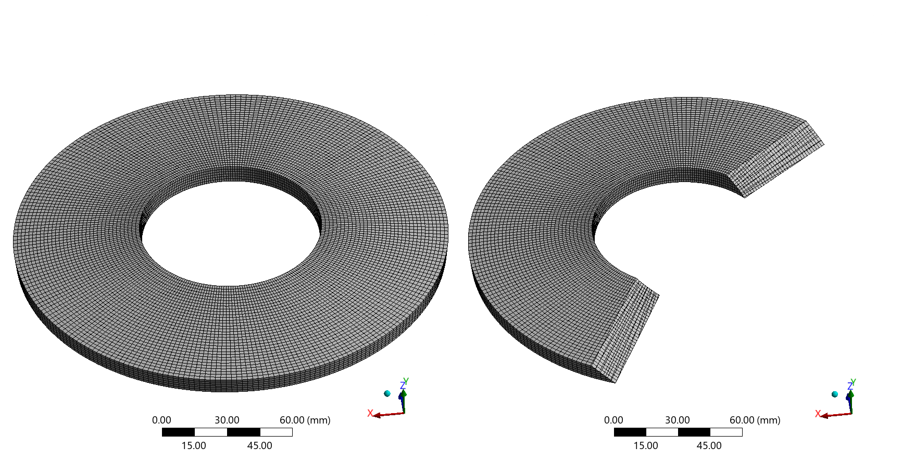
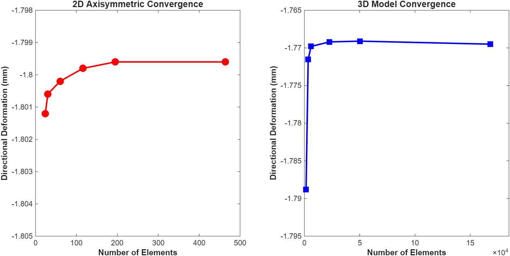
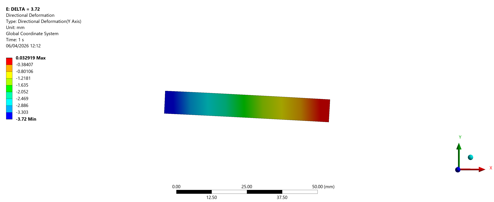
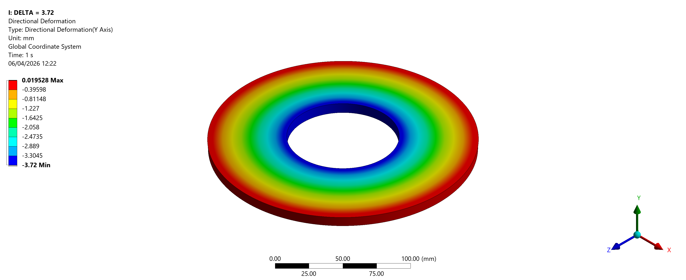
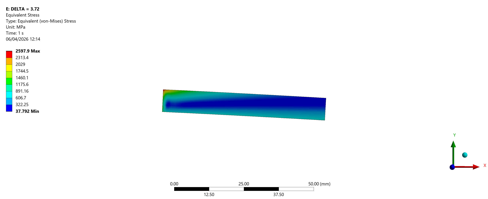
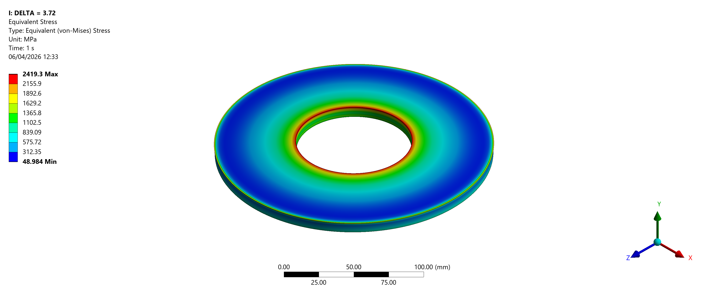
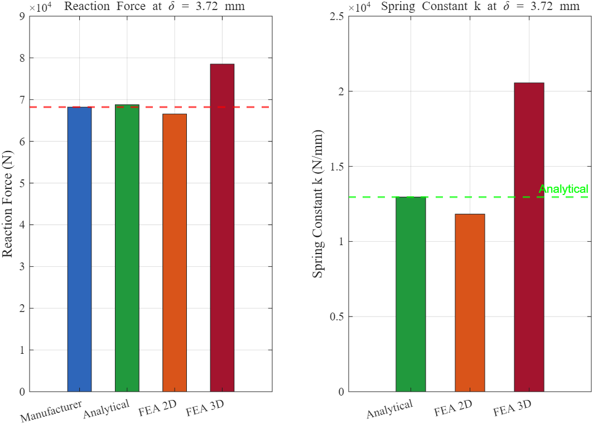